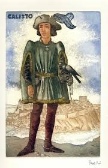

Calisto era un personaje con mucho dinero y que estaba enamorado por completo. El primer dia que vio a Melibea la vio como una mujer perfecta, la describio como una mujer con labios grandes, pelo dorado y hermosasa. Duerante la trama este personaje no le importaba nada mas que no fuera Melibea, de hecho la describe como una diosa. Calisto era un personje de dinero andemas a esto tenia unos criados que trabajaban para el, entre estos Sempronio, Parmeno, Sosia y Tristan. El era un hombre desesperado por amor se pasaba imaginando que algun dia el tendria una hermosa vida con Melibea. Luego de tiempo Melibea y Calisto se empiezan a ver todas las noches hasta el ultimo dia en el que ambos mueren.


Melibea antes de conocer y estar con Calisto era una mujer virgen ya que sus padres Alisia y Pleberio querian que su hija se casara con alguien que ederara la herencia de ellos. Pero esta tristemente se tubo que encontrar a Calisto el hombre que le arruinaria la vida por completo. Al Calisto estar henamorado de ella y ella n, Calilo rechazo, asi que Claisto decidio contratar a una hechisera para que Melibea se fijara en el. Celestina la hechisera derrama un hechizo en hilado que le habia regalado a Melibea esto lo que haria era enfermarla para que luego Celestina le dijera que la unica forma de salvarse era estar con Calisto, Antes de que se dieran cuenta de que Melibea estaba hechizada Lucrecia una de las personas que se ve mas sercana a Melibea durante la trama maldice a la vieja por mentirosa por hechizar a Melibea. Luego de tiempo Melibea y Calisto se empiezan a ver todas las noches hasta el ultimo dia en el que ambos mueren.


Celestian era una anciana muy caprichosa y muy conosida en su pueblo por como era. La Celestina en nombre de la obra proviene de este personaje, mencionan a la Celestina como una persona muy mamipuladora porque lograba hacer todo lo que queria sin hechizeria o con hechizeria. Celestian vivia en una casa con dos prostitutas Elicia y Areusa ambas vivian en su hogar. Estas eran como sus hijas pero tambien eran las que traian dinero a la casa.mCelestian fue contratada por uno de los criados de Calisto Sempronio quien le dijo que Calisto era un hombre con mucho dinero y ella acepto el trato, pero con la condicion de dividir el dinero con Sempronio. Por otro lado esta el otro criado Parmeno el cual conoce a la Celestian desde mucho tiompo ya que su madre era una de sus prostitutas hasta el dia que murio, este tambien pelea con Celestina y le pide la mitad de la cadena de oro y ella dice que si que se lo van a dividir. Una vez Celestian completa el objetivo de hacer que Melibea se fije en Calisto se enamoren Calisto le entrega su cadena de oro y ella la esconde de los criados gracias a esto ella muere y los criados se mueren luego por ser culpables de la muerte de Celestina.